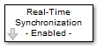
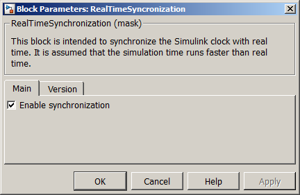

| MBDS Environment |
|
Real Time Synchronization |
MATLAB Helpdesk |
General
This block is intended to synchronize the Simulink clock with real time.
Library
DescriptionMBDS Blockset

This block is intended to synchronize the Simulink clock with real time. This is useful if HMI or other timing related model designs shall be tested with respect to their real-time behavior.
Remarks:
- This block has to be located at the root level of the MBDS model. It must not be used within the underlying subsystems
- It is assumed that the simulation time runs faster than real time.
Using the parameter mask the block can be configured according to the users needs. Via register card Main the block input and output ports can be shown or hidden (see Figure 1).

- Enable synchronization. If checked, the block provides an enable input port for MX and MN.
Figure 1: Parameter Mask Dialog - Register card Main
The register card Version displays the block version information.
Inputs and Outputs
Example
Port I/O Data Type Description -
-
- -
Refer to the example.